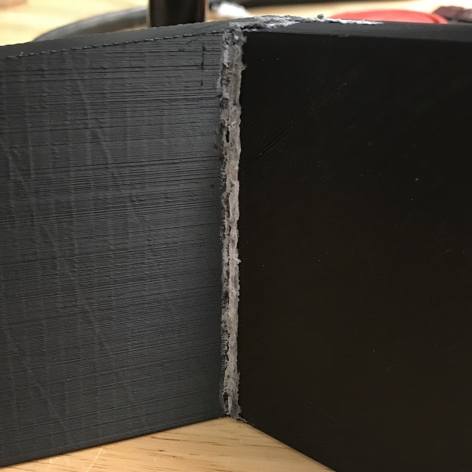

Plastic Welding
My flipper partner and I needed a way to weld joints together, and we
noticed that our school's shop lacked precedent for plastic welding.
We ordered a designated roll of filament and I made instructions, listed below,
for the whole class to have access to.
I've actually used this a lot since, and it plays an important role in
my wind turbine as a coupling agent between the shaft and the generator.
Materials & Prep
- Goggles NECESSARY
- Breathe through your shirt or a mask
- Turn on fan or air filter nearby
- Dremel
- 2.85mm printing filament (white, found in shop)
- the targeted piece(s)
Steps
- Take all safety precautions above
- Plug in Dremel and set to 15
- Cut short (~1 in.) bit of 2.85mm filament and straighten as much as possible
- Place filament into Dremel slot with ~1/3 of strip in hole
- Hold pieces steady in desired final position while you work (Quick Clamps may help)
- The filament takes a little bit of friction to heat up; slide lightly it around the surface and joint in question
- Once filament starts to readily melt off, continue to slide lightly around joint/break
- HOLDING IN ONE SPOT OR PRESSING HARD WILL MELT THROUGH MATERIALS, ESPECIALLY 3D PRINTS! Glide lightly over surface
- Continue until weld is smooth, consistent, and solid